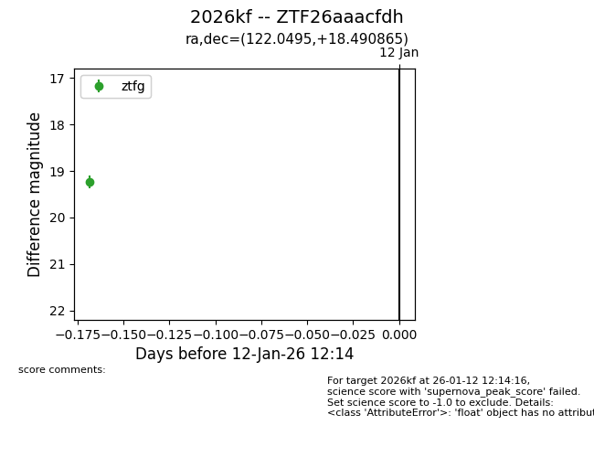
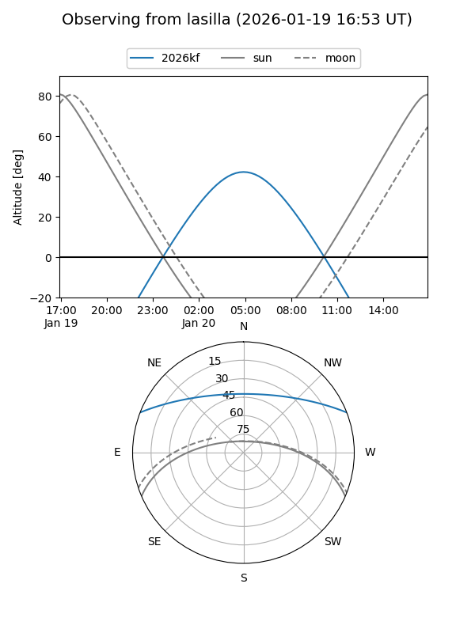
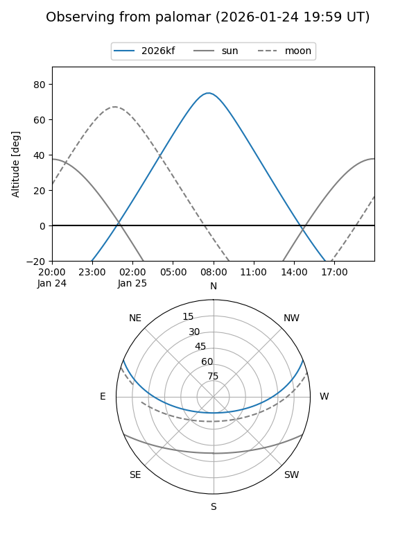
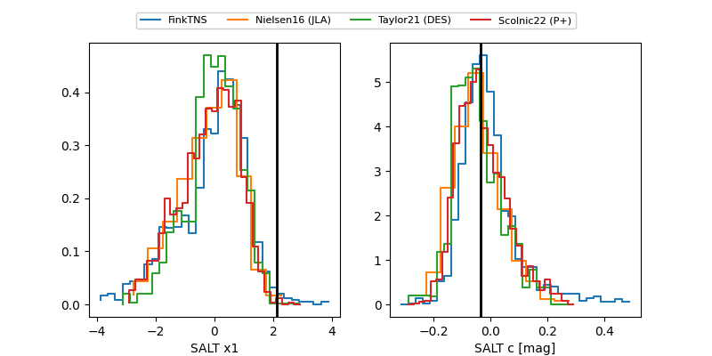

2026kf
Target 2026kf at 2026-01-28 01:16
Aliases and brokers:
FINK: link
Lasair: link
ALeRCE: link
TNS: link
YSE: link
alt names
ZTF26aaacfdh (ztf,fink_ztf)
2026kf (tns,yse)
Coordinates:
equatorial (ra, dec) = 122.0495,+18.49087
equatorial (HMS+DMS) = 08:08:11.89,+18:29:27.12
galactic (l, b) = (204.0408,+24.96444)
Flags:
Photometry:
last ztfg=19.50, ztfr=19.51
4 ztfg, 5 ztfr detections
Lightcurve

Visibility


Additional plots
